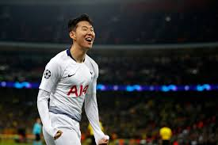

- 2018-19 UEFA 챔피언스리그 결승전까지 간 토트넘의 손흥민이 진정한 축구계의 슈퍼스타가 되기까지...
이번 2018-19 UEFA 챔피언스리그에서 엄청난 기적으로 토트넘이 결승전까지 갔었다. 아쉽게도 결승전에서 같은 잉글랜드 프리미어리그 소속(EPL)의 리버풀에게 졌지만, 팀을 결승전까지 가게 해준 장본인 중 한명인 손흥민이 있었기에 토트넘 구단 역사상 첫 챔피언스리그 결승전에 갈 수 있었다.

챔피언스리그 예선 때 토트넘은 힘겹게 본선에 올라갔지만 손흥민은 본선에서 본인의 존재를 명확히 보여주었다. 16강에서는 손흥민 본인의 골을 포함해서 독일의 팀인 보루시아 도르트문트를 3:0으로 이겼고, 진가를 보여준 경기는 8강에서의 맨체스터 시티와의 만남이었다. 8강 1차전에서 그간 토트넘이 맨체스터 시티(맨시티)의 첫 시즌을 제외하고는 즐곧 맨시티에게 패배해 왔던지라 맨시티의 4강 진출을 여론에서 압도적으로 우세했으나
이기고자 하는 의지가 강했던 토트넘이 빠른 공수 전환과 투지를 앞세워 결국 손흥민의 선제 결승골로 1-0 승리를 굳힌 채 2차전으로 갔다. 2차전은 전설로 남을 만한 난타전이자 VAR로 승부를 갈라놓았던 경기였다. 손흥민이 전반에 양발로 멀티골을 넣었고 맨시티 또한 스털링의 멀티골과 베르나르두 실바의 골로 마무리가 되었고 후반에는 토트넘의 요렌테와 맨시티의 아구에로의 골로 총합 스코어 동점, 원정 다득점 우위를 점하면서 토트넘이 4강 진출에 바라보고 있었다
하지만 맨시티가 추가 시간 공세를 지속하다 스털링의 극장골로 4강 진출을 확정 짓는 듯 했으나 VAR의 판독 결과 오프사이드로 토트넘이 4강에 진출하였다.
4강에서는 네덜란드 리그 소속의 아약스 팀을 만나게 됐는데 이 경기 또한 '암스테르담의 기적'이라고 불리는 만큼 전설적인 경기였다. 4강 1차전에는 아약스의 압도적인 공격과 단단한 수비를 앞세워 토트넘을 0:1로 이겼고, 2차전에도 아약스가 자신들의 장점을 모두 동원해 토트넘을 0:3로 몰아붙였지만 손흥민을 포함해서 토트넘 선수들의 끈기와 투지로 인해 토트넘의 모우라가 해트트릭을 완성시키며 3:3으로 원정 다득점으로 결승전에 오르게 된다.
비록 결승전에서는 리버풀에게 0:2로 졌지만 그만큼 토트넘의 명성이 올라갔고 손흥민 또한 세계에서 주목받는 공격수 중 한명으로 스포트라이트를 받았다.
무엇보다 2018-19 UEFA 챔피언스리그의 손흥민 성적에 대한 큰 기대가 있었는지, 손흥민은 9월 5일(이하 한국시간) 국제축구선수협회(FIFPro)가 발표한 2019 월드 베스트 11 후보 55인 명단에 포함됐다. 공격수, 미드필더, 수비수, 골키퍼 부문으로 나눴는데 손흥민은 리오넬 메시(바르셀로나), 킬리안 음바페(파리 생제르맹) 같은 쟁쟁한 공격수들과 경쟁한다.
A매치를 위해 한국을 오가면서도 손흥민은 지난 시즌 소속팀에서 20골 10도움을 기록했다. 특히 팀 돌료인 해리 케인이 부상으로 빠졌을 때 공격진을 이끌며 토트넘이 잉글랜드 프리미어리그(EPL) 4위, UEFA 챔피언스리그 준우승을 거두는데 크게 일조했다.